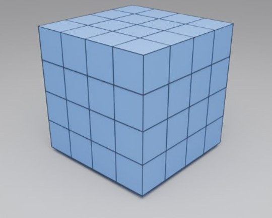
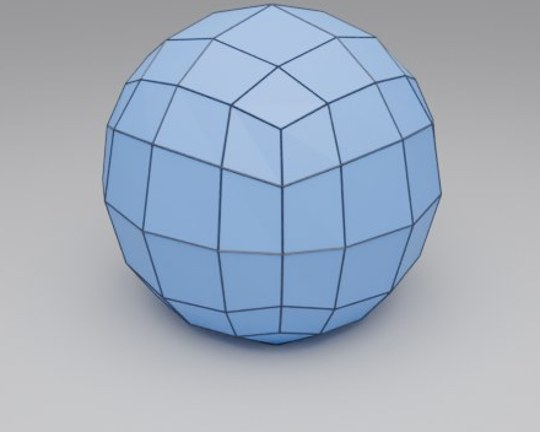

Bonus lesson
To Sphere
The To Sphere transformation gives the selection spherical qualities. It works in Object Mode and Edit Mode. In Edit Mode, find it under Mesh › Transform › To Sphere, or press Shift+Alt+S.


Factor
The operator has a To Sphere Factor. The manual shows a monkey mesh with 0, 0.25 (25%), 0.5 (50%) and 1 (100%) applied, so the shape gets more spherical as the value rises.
The manual also notes that the result is smoother and more spherical when there are more mesh elements to work with.
Read the manual page on To Sphere.
Try it
This exercise is our own suggestion and has not been run step by step in the GUI. Add a cube, enter Edit Mode, subdivide it a few times and select everything. Press Shift+Alt+S, then type 1 and press Enter. Use Ctrl+Z to undo.